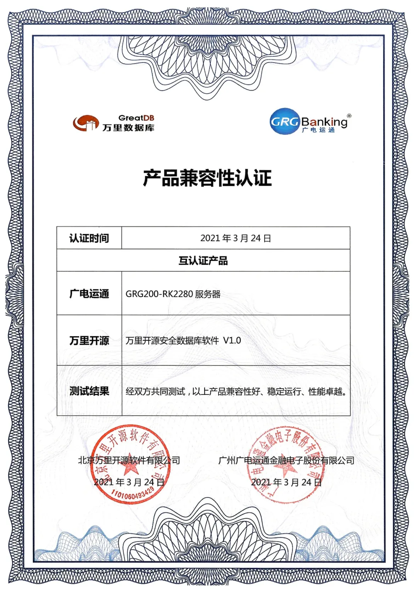
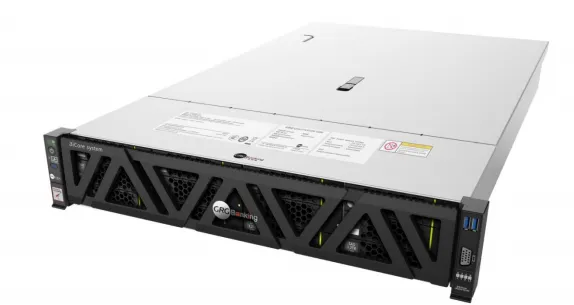

生态 | 万里数据库完美兼容广电运通服务器 助力金融科技更美好！
近日，万里数据库的核心数据库产品安全数据库软件与广电运通服务于金融科技领域的服务器产品GRG200-RK2280进行了兼容适配。双方联合测试表明产品兼容性好、稳定运行，性能卓越。此次数据库+服务器的兼容适配，必将助力金融科技领域更美好！

图
万里数据库&广电运通兼容认证
万里数据库公司旗下的安全数据库软件是公司自主研发的关系型数据库软件，具有动态扩展、数据强一致、集群高可用等优势特性，满足业务高并发、高扩展性、高安全性等需求，全面兼容国产软硬件平台，满足在全国产化平台上的部署与应用，并广泛应用于金融、能源、运营商、政府等行业的核心应用系统。
尤其金融行业是公司聚焦的核心领域之一，万里安全数据库广泛服务于诸多金融客户，与某全国股份制大行开展深度合作，联合研发数据库并成立实验室，在缴费平台、支付、网银、信用卡等核心业务系统推广使用，并支持了某银行信用卡中心替换Oracle的金融类OLTP场景。

广电运通创立于1999年，隶属于广州无线电集团，2007年在深圳证券交易所上市。公司主营业务覆盖智能金融、公共安全、交通出行、政务、大文旅、新零售及教育等领域。在智能金融领域，金融智能终端设备在全球布放量超过33万台。作为银行“前台”金融科技的领先者，广电运通全面赋能银行网点智能化升级，已打造全国首个“无人银行”“5G银行”等标杆项目。同时，公司为我国政府60%的财政性资金提供国库支付电子化方案，财政支付电子化应用市场占有率达98%。
GRG200-RK2280 服务器是广电运通面向金融科技领域、基于鲲鹏 920 处理器的数据中心服务器。其中，2280 均衡型是 2U2 路机架服务器。该服务器面向互联网、分布式存储、云计算、大数据、企业业务等领域，具有高性能计算、大容量存储、低能耗、易管理、易部署等优点。

图
广电运通GRG200-RK2280 服务器
分割线
此次万里安全数据库与广电运通服务器产品的完美兼容，为双方未来在金融科技领域开展更深入、全面的项目及交流合作打下了技术基础。
未来，万里数据库将与广电运通携手合作，借助双方在金融科技领域的资源与技术优势，强强联合，共同为助力金融科技更美好贡献更多力量！
推荐阅读1.生态 | 万里数据库与电科云系列产品完成兼容互认证
2. 生态 | 万里数据库与麒麟软件达成战略合作 开启生态共荣新篇章！
3. 生态 | 万里数据库与电科云达成全面战略合作 共推信创产业生态做大做强

扫码二维码
关注公众号